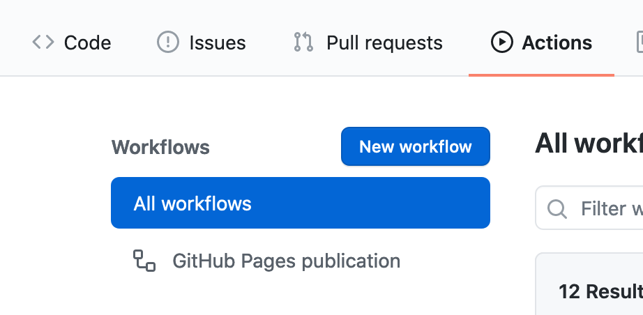
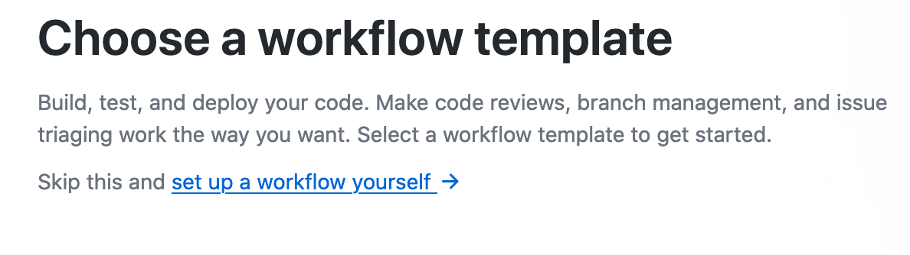
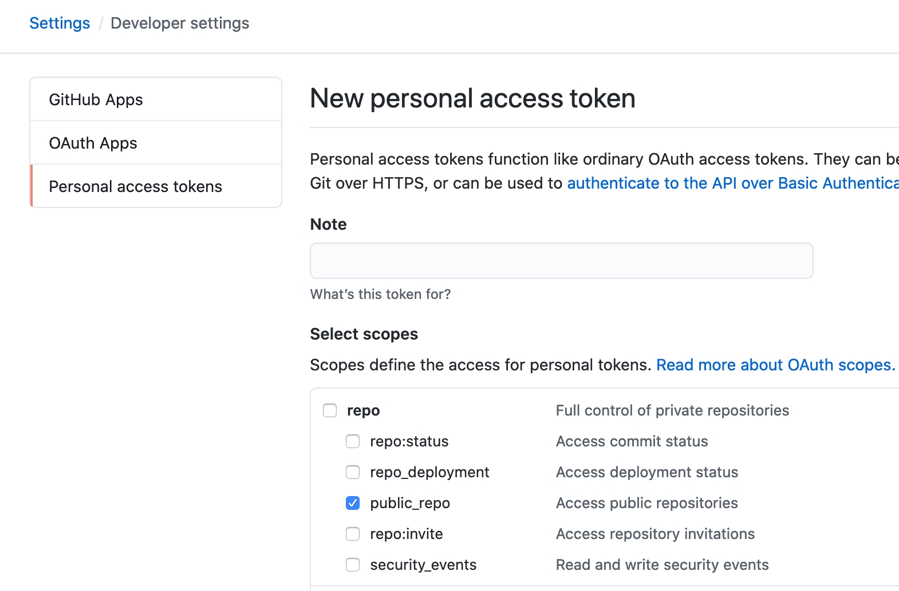
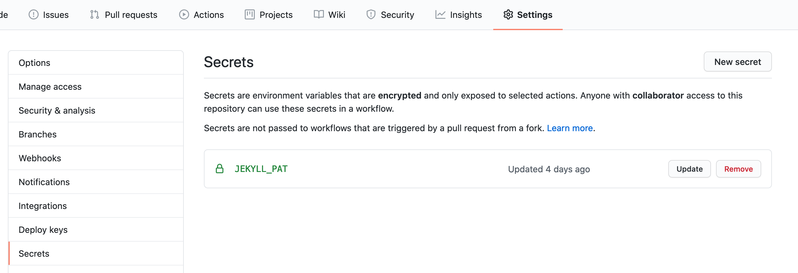

Mr Hyde
Text you are reading is available on Jekyll blog hosted on GitHub, with the use of free Github Pages.
Long story short: Jekyll is a template engine changing markdown documents on static HTML webpages, that you can then host anywyere,
because you don’t need databases or server that has PHP or Python.
Usual process
Normally process of adding new post looks like this:
- I write
markdowndocument with setting parameters like title, date and tags - when I’m happy with what I wrote (never), I commit changes and push it to repository on GitHub. Repository name comes from my nick and is also address for blog
asvid.github.io - Github after pushing to branch
masterbuilds website from sources using Jekyll - probably something like runningjekyll build - result of Jekyll build is not present in a repository, but you see it right now after visiting blog page
The above process works entirely automatically, no need of configuration on repo site or GitHub itself. All you need is having repo name that fallows pattern: {user_name}.github.io.
Normally it works. But…
I want plugins
Sometimes you want to add something cool to your page. I wanted to have it in few languages, like polish and english. Jekyll is not supporting this natively… but also is not making it impossible  So I’ve found plugin Polyglot, that allows adding many languages on same page without need of complete rebuild or restructure.
I used it, after a while it was kinda working. After longer while it was working as I wanted. Locally.
So I’ve found plugin Polyglot, that allows adding many languages on same page without need of complete rebuild or restructure.
I used it, after a while it was kinda working. After longer while it was working as I wanted. Locally.
After pushing changes to GitHub page wasn’t working properly. I learned that GitHub is not simply building everything you throw at it, but it has a whitelist (I wonder when they change this name…) of supported plugins. Polyglot is sadly not on this list, despite its creator tries. Whitelist itself is understandable for security reasons, we don’t want to GitHub go down because of some evil plugin or hidden bitcoin miner running on GitHub servers.
But I really need this plugin
Like every problem this one also has a solution. Even few of them. You can build the page locally and push it to the master branch, and keep source on other branch like develop.
There is also NodeJS package, that publishes NodeJS apps as GitHub Pages.
But I’m lazy and I don’t want to build manually and push sources and build result separately, also I don’t have NodeJS app, so I use solution number 3.
GitHub Actions
GitHub Actions is a basic CI available for free for every repository.
To use this CI you need to create Workflow with yaml configuration telling it what and when should happen. There are many available actions,
and if something is missing, you can do one yourself or combine few into one workflow.
To add workflow go to your repository->actions->New workflow and then click link to set up a workflow yourself.


This will add yaml file with config inside repository in directory .github/workflows
To publish Jekyll blog with not whitelisted plugins I used Jekyll-Actions configured inside workflow like this:
name: GitHub Pages publication
on:
push
jobs:
jekyll:
runs-on: ubuntu-16.04
steps:
- uses: actions/checkout@v2
# Use GitHub Actions' cache to shorten build times and decrease load on servers
- uses: actions/cache@v1
with:
path: vendor/bundle
key: $-gems-$
restore-keys: |
$-gems-
# Standard usage
- uses: helaili/jekyll-action@2.0.3
env:
JEKYLL_PAT: $
# Specify the Jekyll source location as a parameter
- uses: helaili/jekyll-action@2.0.3
env:
JEKYLL_PAT: $
This action runs inside ubuntu-16.04 container, and then:
- downloads repository after each push (on every branch which is causing some issue)
- is using cache to not download same
Gemseach run - runs action to build page and publish ot on branch
master, with a push that is possible thanks tosecrets.JEKYLL_PAT
And this publishing on branch master means that you shouldn’t push source changes to this branch.
If you want to use this action, you need to push changes to develop and leave master only for files build and pushed by the script.
How to create secret.JEKYLL_PAT
Action itself works in isolated container and has no write access to your repository. It can read it because its public.
To allow this, you need to create access token with public_repo scope, and then add it in repository as a secret with name expected by configuration secret.JEKYLL_PAT.
You generate token from GitHub account settings: Settings->Developer Settings->Personal Access Tokens.
After clicking on Generate new token fill the name and select checkbox public_repo.

After clicking button on the bottm Generate token you will have the only chance to copy it, I suggest taking it 
Copied token needs to be pasted to repository secrets: Settings->Secrets->New secret. Name like in config secrets.JEKYLL_PAT and value is copied token.

And it should work. At least works for me, because you are reading this